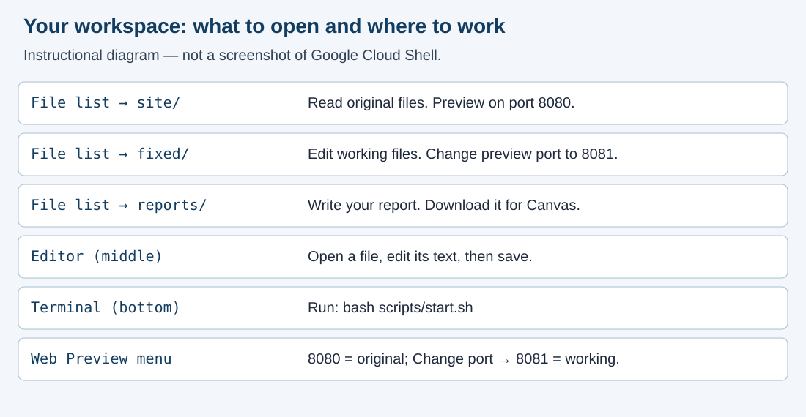
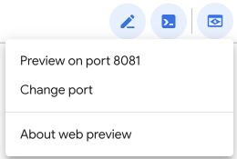
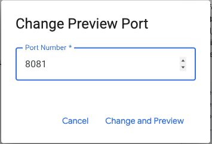
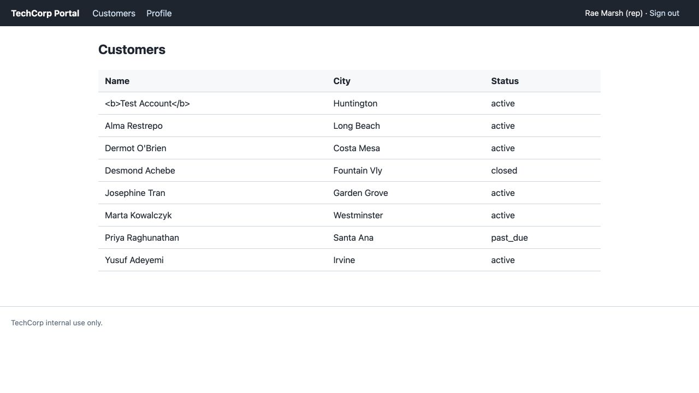
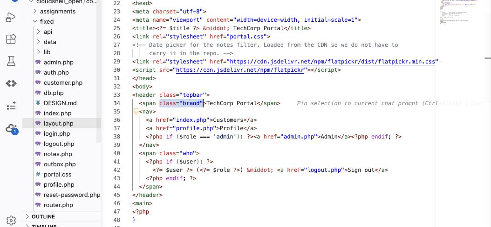

Set up two copies of the TechCorp portal: site is the original you read and compare, and fixed is the working copy you change throughout the term. Practice the read, change, prove, report routine with two harmless labels. Plan about an hour.
Download the accessible Word report template from this module’s Canvas assignment.
m01-setup.docx.assignment.md and your changed code. Required screenshots can go inside the Word report; separate image uploads are needed only if you reference files that are not included in it.site, fixed, reports, and scripts. Right-click the workspace folder and choose Open in Integrated Terminal.bash scripts/start.shsite portal is running on port 8080.
fixed portal is running on port 8081.For missing folders, an occupied port, or an older workspace, follow the Cloud Shell Guide. Your own two portal copies are the only authorized targets.

Open full-size image (opens in a new tab)Workspace map: a simplified instructional diagram, not a Cloud Shell screenshot. Commands and labels remain written in the steps above.
rmarsh and password password. These fictional portal credentials are separate from your Google account.m01-setup-before.png.
Open full-size image (opens in a new tab)Actual Cloud Shell controls: the Preview label remembers the last selected port (8081 here). Use Change port to select 8080 for site or 8081 for fixed.

Open full-size image (opens in a new tab)Enter 8081, then select Change and Preview to open fixed.
site/layout.php and site/index.php to read the original labels. Leave these files unchanged.
Open full-size image (opens in a new tab)Reference screenshot from the local course portal: look for TechCorp Portal in the top bar and Customers above the table. Use your own captures in your submission.
fixed/layout.php. Use Ctrl+F (Cmd+F on a Mac) to find:<span class="brand">TechCorp Portal</span>TechCorp Portal with your own label, such as Rae's Support Desk. Keep the HTML tags and save with Ctrl+S (Cmd+S on a Mac).fixed/index.php. Find <h2>Customers</h2> and change it to:<h2>My Customers</h2>php -l fixed/layout.php
php -l fixed/index.phpNo syntax errors detected; you still need the browser comparison below.
Open full-size image (opens in a new tab)Actual Cloud Shell editor: fixed is expanded in the file list, with layout.php selected and its brand span visible. Change only the TechCorp Portal text inside the brand span. Your workspace folder name may differ.
m01-setup-changed.png.fixed/layout.php in the editor file list and choose Download. Do the same for fixed/index.php. These are the changed source files you will submit. Keep them in a local folder named changed-code so you can distinguish them from restored files.fixed/layout.php, replace your label with TechCorp Portal and save.fixed/index.php, change My Customers back to Customers and save.m01-setup-restored.png, showing the original labels again.This setup exercise restores its cosmetic edits after you download the changed source. Later security repairs stay in fixed/ across the term.
m01-setup.docx, supplied assignment.md, and the changed layout.php and index.php saved before restoring the labels. Screenshots included in the report do not need separate uploads.If blocked, record the exact action, which copy and port, and the error. Contact the instructor through Canvas Inbox or course Q&A; report only results you actually observed.
Place screenshots in the Word report beside their prompts, with a caption and alt text. Keep written test results in the report too.
Submit these three parts together: assignment.md, your completed m01-setup.docx, and your changed layout.php and index.php. Include any screenshots required above. Keep the [STUDENT] prompts in your report and write each answer directly below its prompt.
assignments, then module-01, and click assignment.md. This is the supplied task description. Leave it unchanged.assignment.md file and choose Download. You can also download assignment.md here.fixed/, as directed above.layout.php and index.php downloaded before restoration.assignment.md, your report, every required changed source file, and required images. Keep the lab instructions, your completed report, and your changed code together in the same submission.Open notes and open book are both fine. Respond in your own words; do not copy from other sources.
AI use on this assignment. The syllabus policy governs; these are its terms for a setup lab.
You must be able to explain every line you submit, on request. Undisclosed AI use is handled as academic dishonesty under the syllabus.
fixed/ shows the two label changes; site/ stays original.m01-setup.docx, including all answers and three screenshotsassignment.mdlayout.php and index.php downloaded from fixed before restorationComplete the name, AI disclosure, and reflection prompts in the Word report. Keep earlier repairs in fixed.
Read report section 4 Business impact and risk, including TechCorp’s initial ratings and risk matrix. Complete the [STUDENT] entry: confirm or revise Impact and Likelihood as Low, Medium, or High, give a short reason for each, and explain how the control helps. Use the clearly labeled EXAMPLE as a model and write your own answer below it. Module 1 assesses the reliability of the setup and comparison process; it does not ask you to discover a vulnerability or claim customer-data exposure. Keep answers brief.